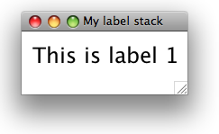
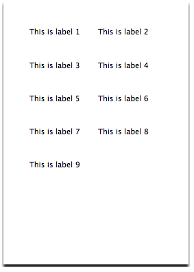
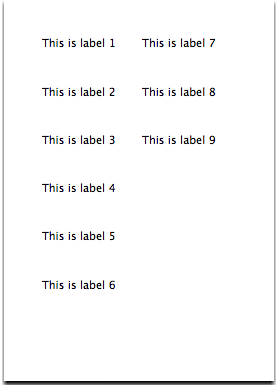
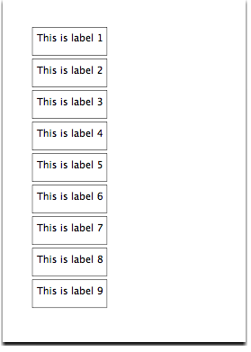
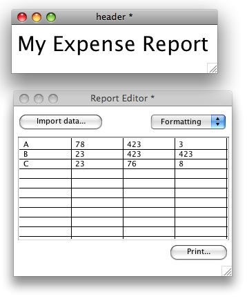
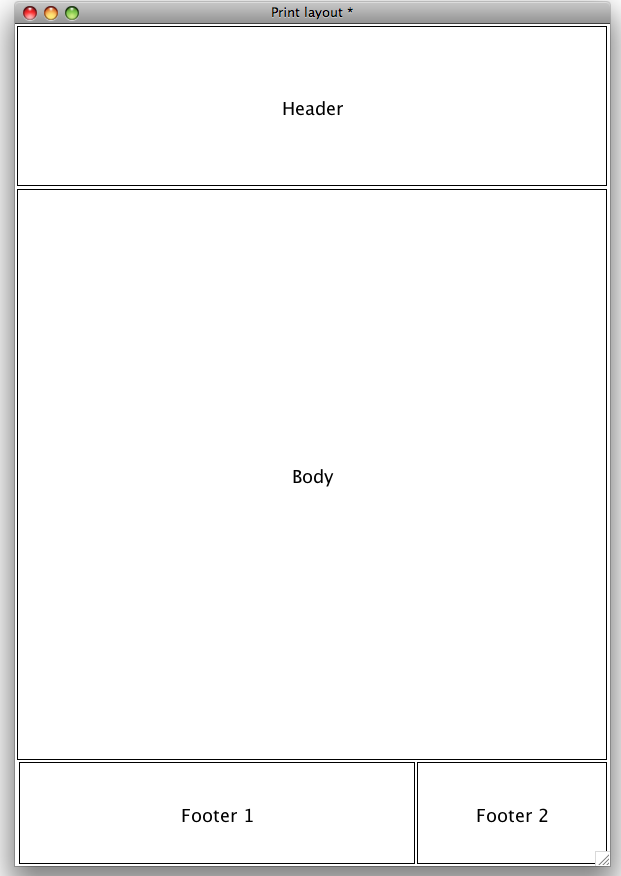

Printing is a vital aspect of many applications. LiveCode provides a comprehensive set of printing capabilities. Whether you want a simple print out of your stack, want to print labels or produce complex reports, LiveCode has the features you need.
LiveCode supports a number of methods of printing. You can use the print card command and have LiveCode manage the layout of cards on the paper. Alternatively you can use the print into rectangle commands which allow you to take full control over the layout of your print out. The former method is most suited to implementing simple print functionality, while the latter is better suited for more complex layout printing or printing reports. Finally, you can use the built-in field printing script library to print the contents of any text field using a simple command.
LiveCode also includes a full set of features to access and set printer device options, including options such as margins, page range and number of copies. This feature is invaluable if you want to produce a high resolution PDF file from your stack.
LiveCode gives you full programmatic control over your printer device and any available settings.
Use the availablePrinters to list the printers available on the user's system. Printers can include fax modems and networked devices. If the availablePrinters is empty, no printer is assigned. For example, to place a list of the available printers into a list field:
put the availablePrinters into field "list of printers"
Set the printerName to the printer you want to use to print. You can use any printer listed in the availablePrinters. This property is useful when producing an in-house utility that needs to print to a specific printer on the corporate network, or for automatically restoring the user's previous printer choice stored in a preferences file.
set the printerName to the cSavedPrinter of stack "My Preferences"
The printerFeatures provides a list of the features supported by the currently selected printer. Features will vary widely from device to device, but typical features may include things such as "collate", "color" and "duplex". Use this property to enable and disable output options in any custom printer settings dialog.
The printerOutput global property allows you to choose the output mode for subsequent printing commands. This property is set by the system to the default printer on startup and will be changed if you open a system print dialog in which the user chooses a different printer. If this property is set to device it will output to the physical printer. Alternatively, you can set it to a file path to print to a file. On Mac you can set this to preview to create a preview.
For example, to save the current card to a file:
ask file "Save as:
set the printerOutput to ("file:" & it )
print this card
In most applications that need to print, you will want to provide a way to bring up the standard OS Print and Page Setup dialogs. Typically you would make these dialogs available from Print and Page Setup items in the File menu of your application. When the user makes changes in these dialogs the changes are made accessible to you in global properties. We discuss how to save and utilize these properties below.
Note: It is not necessary to bring up the standard OS dialogs to alter printer settings. You may set the appropriate printer setting directly by script instead.
On Linux systems you will need a recent version of GTK installed in order to display the OS printer dialog. If you don't have this installed, LiveCode will display its own printer dialog which has been built as a stack and script library. This dialog mimics the standard system printer dialog and sets the LiveCode printing global properties directly.
Tip: You may force LiveCode to use its own internal print settings dialog by setting the
systemPrintSelectorglobal property to false. Advanced users may customize the printer dialog that LiveCode uses by runningtoplevel "print dialog"ortoplevel "page setup"in the Message Box. Remember to save a copy of the stack as it will be overwritten each time you upgrade your copy of LiveCode.Important: The LiveCode print and page setup dialogs must be included in a standalone application if you use them. Ensure that the check box Print Dialog is turned on in the Standalone Application Settings dialog for your application. You do not need to include these dialogs if you only use the OS native print dialogs. For more information on including resources in your standalone application, see the chapter on Building Standalone Applications.
To bring up the standard OS printer dialog, use the answer printer
command.
answer printer
If the user does not press the cancel button then any changes to the printer settings will be reflected in the global printing properties, discussed below.
To bring up the standard OS page setup dialog, use the answer page setup command.
answer page setup
To save or set a complete set of options relating to the current printer which includes every setting in the OS Page Setup and Print dialogs, use the printerSettings global property.
The printerSettings property is a binary string that completely describes the current settings. The property contains the name of the printer and the settings currently in use.
You should not attempt to modify the printerSettings but rather get and set it in its entirety. To access individual printer properties, use the global printing properties described below.
When you set the printerSettings property to a saved value, LiveCode will choose the printer named in the property and set all of its settings to those contained within the property. If the printer cannot be found LiveCode will return the error "unknown printer" in the result. If the printer is found but the settings are not valid then LiveCode will choose the printer and reset it to default values.
Note: You must save a separate copy of the printerSettings property for each printer or OS you intend to use. The printerSettings property cannot be transferred between platforms. For example, a printerSettings property generated on a Windows computer cannot be used on Mac – even for the same printer. If you want to alter settings across different platforms and printer types use the global printing properties described below. Use the printerSettings for convenience when you know you will be using the same printer and want to save all the settings, or where you are setting esoteric properties not listed in the global printing properties described below.
To save the current printer settings into a custom property stored on the current stack:
set the cSavedPrinterSettings of this stack to the printerSettings
save this stack
Then to restore these settings:
set the printerSettings to the cSavedPrinterSettings of this stack
This section discusses how you get and set paper related options – the rectangle area of the paper, the paper size, the orientation and the scale to use to print onto the paper. These paper options apply to all types of printing, i.e. card, field and layout printing.
Use the printRectangle to get the printable rectangle area within the paper (returned in device co-ordinates). This property takes into account any settings applied by the user in the Page Setup and Printer dialogs including the print orientation (e.g. landscape or portrait). The rectangle is represented left,top,right,bottom and is always relative to the top left of the page – thus the top left will always be 0,0. The printRectangle will always be within the printPaperRectangle – the rectangular area of the sheet of paper.
The printRectangle property is read only and cannot be set directly – to alter it you must set other options relating to the paper, for example the printPaperOrientation(discussed below).
Do not confuse the printMarginsand other card layout printing properties with paper properties such as the printRectangle. The printMarginsonly applies to printing cards using LiveCode's automatic card layout capabilities (discussed below). Thus the printMarginshas no effect on printRectangle.
Use the printPaperOrientation to get and set the orientation of your print out. This property may be set to one of the following values:
portrait: rotated 0 degrees.
landscape: rotated 90 degrees clockwise.
reverse portrait: rotated 180 degrees clockwise.
reverse landscape: 270 degrees clockwise.
set the printPaperOrientation to "landscape"
Use the printPaperScale property to apply a scale factor to your print out after all other settings have been taking into account.
The printPaperScale is applied after all other layout and scaling options. For example, if you have used the layout printing features to print a series of cards at 50% scale, then set the printPaperScale, this factor will be applied to the entire layout after the card layout scaling has been calculated.
To print a range between 1 and 100% set the printPaperScale to a number between 0 and 1. To print at 200% set the printPaperScale to 2.
set the printPaperScale to 0.5 -- 50%
This section discusses how to get and set job related options – the number of copies, duplex printing, collation, color, title and printable area.
Important: The available job options all depend on what the currently selected printer supports (use the printerFeaturesproperty, described above, to retrieve a list of features supported by the current printer).
Use the printCopies property to get and set the number of copies to print. The printCopies should be set to a value of 1 or more.
set the printCopies to 5 -- print 5 copies
Use the printDuplex property to tell the printer to print double sided. This property may be set to any of the following values:
long edge: double-sided printing without tumble.
set the printDuplex to "short edge"
Use the printCollate property to specify whether to interleave multiple copies of a print job. If a print job has three pages, P1, P2 and P3, with printCollate set to true and printCopiesset to 2 the output order will be P1, P2, P3, P1, P2, P3. With printCollate set to false the output will be P1, P1, P2, P2, P3, P3.
set the printCollate to true
Use the printColors property to specify whether to print in color or not. If "color" is not among the lines of the printerFeatures then this property will have no effect and all print jobs will be printed in monochrome. This property may be set to either true or false.
For example, to check if color printing is supported on the current printer and use it if it is:
if "color" is among the lines of the printerFeatures then
set the printColors to true
end if
Use the printTitle property to specify the name of the next print job in the system printer queue. Setting this property to match the name of the user's document will ensure that the user is able to recognize it in the system printer queue utility. If the printTitleis empty at the start of a printing loop, the title of the defaultStack will be used.
set the printTitle to "My Report 1"
Use the printRectangle property to determine the printable region of the physical page as returned by the printer. This rectangle will always be contained within the printPaperRectangle. Thus you should use the printRectangle and not the printPaperRectangle when calculating a print layout. The printPaperRectangle is useful if you are generating a print preview and want to show the entire area of the paper including any margin areas that cannot be printed on. This property is read only and cannot be set directly.
Windows systems sometimes use different versions of the same font for displaying text on screen and printing. This can result in layouts and line breaks differing between the screen display and the printed output. To prevent this from happening, you can tell LiveCode to use the printer fonts for display on screen. To do this, set a stacks formatForPrinting property to true.
Do:
- Set the formatForPrintingstack property to true before loading a
stack in memory. If the stack is already loaded, set this property to
true then save and reload it. (Save then use
Close and Remove from Memory in the File menu).
- Create a stack off screen (with formatForPrinting set to true)
with your print layout template and copy text into it prior to printing.
- Set the formatForPrintingbefore doing any print layout related
calculations on the stack.
- Set the formatForPrintingto true on any print preview stack being
displayed to the user.
Don't:
- Allow the user to directly edit text in fields whose
formatForPrinting is set to true. Attempting to do this may cause
display anomalies. Set this property to false and reload the stack
first.
- Generally use stacks with formatForPrintingset to true for display
on screen, as this will show text that has been optimized for print
display (instead of screen display), which is harder to read on screen.
- Use this property on other platforms – Windows is the only platform
that uses different fonts on screen vs. in a print out.
- Use the windowBoundingRect property to constrain display of a
stack who's formatForPrintinghas been set to true – this property
will be ignored when the stack is opened or maximized.
Once you have set your printer, paper and job options (above) you are now ready to use one of the print commands to start printing. At its simplest, the print card command allows you to print a card. Later we will discuss ways of printing more complex layouts, fields and text.
print this card -- prints the current card
print card 12 -- prints card 12
For more details on how to specify which cards to print, see the print command in the LiveCode Dictionary.
To print a scale between 1 and 100% set the printScale to a number between 0 and 1. To print at 200% set the printScale to 2.
The printScale applies to each card that you print. It is not related to the printPaperScale which is applied to the entire print job after all other scaling calculations have been applied. Thus you may set the printPaperScale to 0.5 to print at 50%, then print individual cards at different printScale values. With a printPaperScale of 0.5, a printScale of 2 would result in that card being printed at 100%.
When printing a card, use the printMargins to specify the margins around the border of the card on the page.
Note: When calculating placement on the printed page, all calculations assume that there are 72 dots per inch – regardless of platform or printer device. LiveCode will automatically adjust the print out for resolution of the actual device. This makes it simple to calculate your printed layout.
-- a one-inch margin on each side
set the printMargins is set to 72,72,72,72
The printMargins only applies when using print card directly. It does not have any effect on printing cards into a layout (described below).
The printCardBorders property specifies whether or not the bevel border around the edge of a card should appear in the print out.
When using the basic print card form of the print command, there are two layout options that allow you to customize the positioning of cards on the printed page. If you require further flexibility, see the section on printing a layout, below.
Use the printRowsFirst property to specify whether cards should be printed across and down or down then across.
Consider a simple example of printing multiple cards – this example is useful for printing labels. In this example we have a stack that contains 8 cards, each one containing a mailing label. If you want to try out this example:
Thus we have a stack that looks like the figure below.

Now we will implement the printing commands. If this was a real application you would probably want to put these in a Print command in the File menu. In this instance you may execute the following in the multi-line message box (open the Message Box then press the second icon to get the multi-line pane).
-- allow the user to choose printer output options
answer printer
print 9 cards
Press enter to execute the commands.
The resulting print out will look like the figure below.

If we modify the print commands to include an additional line to turn off the printRowsFirst:
answer printer
set the printRowsFirst to false
print 9 cards
The resulting print out will look like the figure below.

Use the printGutters property to specify the margin between each card. By default the printGutters are set to 36,36 or one half inch horizontally and vertically.
In the following example, we print the same label stack but reduce the space between each label to 1/10th of an inch. To make it easy to see the differente we also turn on printing of card borders using the printCardBorders property.
answer printer
set the printGutters to 7,7
set the printCardBorders to true
print 9 cards
The resulting print out will look like the figure below.

To print a field, use the revPrintField command. This command takes a single parameter, a reference to a field. This command only allows printing a single field. If you need to include a header and footer or text you have constructed programmatically, see the revPrintText command below.
revPrintField the long id of field "text document"
revPrintField is implemented as a script library located in the LiveCode IDE. The script library creates an invisible stack, sets the rectangle of that stack to the current paper size, sets the formatForPrintingto true, creates a field, then copies the contents of the field you specify into this invisible stack. It then prints the field one page at a time, scrolling the text after each page. Advanced users can locate this library script by going to the Back Scripts tab in the Message Box, turning on the checkbox for Show LiveCode UI Back Scripts, then editing the script of stack "revPrintLibrary". The revPrintField handler is near the top of the script.
Use the revShowPrintDialog command to control whether the system printer and page setups dialogs should be shown by revPrintField or revPrintText.
-- show the system printer dialog, but not page setup
revShowPrintDialog true, false
revPrintField the long id of field "text document"
Use the revPrintText command to print plain or styled text together with an optional header and footer.
revPrintText textToPrint [,headerText [,footerText [,fieldTemplate]]]
The textToPrint is anything which evaluates to a string. If you want to printed styled text, pass HTML instead of plain text. (To convert a field containing styled text to a HTML use the htmlText property.)
The headerText and footerText contains the text to use as a header and footer. You may include an expression that is computed for each page. For more details on using expressions, see the LiveCode Dictionary entry for revPrintText.
The fieldTemplate parameter allows you to specify a field reference to use. Fonts in the print out will be inherited from this field.
If you need to print a more complex layout than allowed with the basic print card command or text printing commands (described above), you can use the print card into rect syntax to create any sort of layout you choose.
print card from topLeft to rightBottom into pageRect
The topLeft is the top left coordinate of the current card to start printing at.
The rightBottom is the bottom right coordinate of the current card to stop printing at.
The pageRect is therectangular area on the paper to print into.
printMargins only applies when using print card directly. It does not have any effect on printing cards into a layout. Use the printRectangle to get the printable area when working with layout printing.
For example, lets say that we want to print the text field from the middle of the stack in the figure below. (You can load the stack shown in the picture by going to your LiveCode installation folder then opening Resources-> Examples-> SQLite Sampler.rev.) We want the output to scale to take up the entire width of the paper and half the height.
local tRect
put 0,0,item 3 of the printRectangle, \
round(item 4 of the printRectangle / 2) into tRect
print this card from the topleft of field "theText" \
to the bottomRight of field "theText" \
into tRect
This results in the print out shown in the figure below.

You can construct a complex layout taking components from multiple stacks by printing a sequence of rectangles onto the same page. For example, you may have a stack that contains a standard header and footer, another that contains a logo, and a layout that contains text. Use the open printing command to start a print job, then print each element into the appropriate rectangle on the paper. The use then close printing command to send the print job to the printer. The example in the figure below shows two stacks with printable regions that we want to combine onto a single sheet of paper.

To print these onto a single sheet:
answer printer -- show the system print settings dialog
open printing -- start a print job
-- work with the header stack
set the defaultStack to "header"
-- print the header field onto the top left of the paper
print this card from the topLeft of field "header" \
to the bottomRight of field "header" \
into the rect of field "header"
-- save the bottom of the header
put the bottom of field "header" into tHeaderBottom
set the defaultStack to "report editor"
-- print the table field below the header
print this card from the `topLeft`of field "report table" \
to the bottomRight of field "report table" \
into 0,tHeaderBottom,the`right of field "report table", \
the bottom of field "report table" + tHeaderBottom
-- send `the`job to `the`printer
close`printing
To print a more complicated layout, create a stack and set its rectangle to the current printRectangle. Add rectangular areas for each component you will be printing. Then set Geometry properties (see the section on the Geometry Manager, in the LiveCode Script guide for more information) on each of these rectangles so they resize correctly when the stack is scaled. Set up your print routine so that you open this stack invisibly then resize it to the printRectangle. This will trigger the geometry routines and scale the rectangular areas correctly. Then run your sequence of print commands to print into each rectangle.
In the figure below, we have set the size of the stack to the printRectangle then added 4 rectangle graphics. We have named each graphic and turned on the Show Name property for each so you can see the name.

Next, we set Geometry properties for each of the rectangle graphics. The header graphic is set to scale relative to the right and bottom, with a minimum size limit of 100 pixels (see the figure below). The body graphic is set to link the top edge to the header graphic, the right and bottom to the stack (see the figure below). The footer 1 graphic is set to scale the right edge and position the bottom edge. And footer 2 is set to position both the right and bottom.


To make the printing template stack take on the size of the paper, we can add the following handler to the stack script:
on preOpenStack
set the width of this stack to (item 3 of the printRectangle - item 1 of the printRectangle)
set the height of this stack to (item 4 of the printRectangle - item 2 of the printRectangle)
end preOpenStack
We now have a working print template stack. All that remains is to write the script that prints into the rectangles:
-- prepare to load this stack off screen
hide stack "print layout"
-- this will trigger the stack to resize, which run the geometry
-- routines, giving us the correct values for each rectangle
go stack "print layout"
-- now we store these rectangle coordinates in variables
put the rect of graphic "header" into tHeaderRect
put the rect of graphic "body" into tBodyRect
put the rect of graphic "footer 1" into tFooter1Rect
put the rect of graphic "footer 2" into tFooter2Rect
-- we can close the layout stack as its no longer needed
close stack "print layout"
-- load the system printer dialog to allow the user
-- to choose number of copies, etc.
answer printer
-- start the print job
open printing
-- set the stack we are working on to a stack containing the header
-- you could use any stack or region within a card here
set the defaultStack to stack "header graphics"
-- print from the rectangle of our header group
-- into the rectangle we stored earlier
-- we could use a graphic or any rectangular area instead of a group
print this card from the topLeft of group "header" \
to the bottomRight of group "header" into tHeaderRect
set the defaultStack to "body contents"
print this card from the topLeft `of`group "body" \
to the bottomRight of group "body" into tBodyRect
set the defaultStack to "footer1"
print this card from the topLeft of group "footer1" \
to the bottomRight of group "footer1" into tFooter1Rect
set the defaultStack to "footer2"
print this card from the topLeft of group "footer2" \
to the bottomRight of group "footer2"
-- send the print job to the printer
close printing
-- check to see if the user cancelled or there was an error
if the result is “cancel” then
-- insert any code you need here to handle cancellation
else if the result is not empty then
-- bring up an error dialog
answer “Printer Error”
else
-- insert any code you need here to handle success
end if
For more information on how to print multiple pages of a complex layout, see the section on Printing Multiple Pages, below. For information on printing scrolling text fields into an area within a layout, see the section on Working with Scrolling Fields when Layout Printing, below.
To print multiple pages when printing cards, simply specify which cards you want to print as part of the print command.
print {range}
Examples:
-- prints the current card
print this card
-- prints all cards in the current stack
print all cards
-- prints the next 10 cards, starting with the current card
print 10 cards
-- prints card 3 to 7 of the current stack
print card 3 to 7 print marked cards
-- prints all cards where the mark property is true
print marked cards
To print multiple pages when printing layouts, use the open printing command to open a print job. Then print the layout for the first page (see above). Then use the print break command to insert a page break into the print job. Then lay out the second page and so on. Finally, use the close printing command to send the print job to the printer.
To print a single scrolling text field, use the revPrintText command (see above for more information). If you want to incorporate the contents of a scrolling field within a layout, use the pageHeights property to scroll the field each time you print a page, then print break to move to the next page.
The pageHeights returns a list of values to indicate how far a scrolling field needs to be scrolled to avoid clipping a line of text on each page of your print out. (You should use this feature in conjunction with the formatForPrinting property, above.)
-- store a list of pageHeights
put the pageHeights of field "body text" into tHeightsList
-- scroll the field to the start
set the scroll of field “body text” to 0
-- start the print job
open printing
repeat for each line l in tHeightsList
-- clip the field to the bottom of the last visible line
set the height of field “body text” to l
-- print the field rectangle
-- you may want to add an output "into" rectangle
print this card from the topLeft of field "body text" \
to the bottomRight of field "body text"
-- print a new page
print break
end repeat
-- send the job to the printer
close printing
Important: Set the Lock Location (lockLoc) property of the field to true before setting the height in the loop above to avoid the field “drifting” each time you alter the height.
Tip: Turn off the scroll bar properties (hScrollbar and vScrollbar) of the field before printing and set the border width to 0 if you want to avoid printing a border or scroll bar.
You can incorporate scrolling fields into a template print layout stack (see the section Printing a Complex Layout above) to make it easier to manage printing a complex layout. Create a field in your template print stack instead of a graphic, turn off the scroll bar, set the border width to 0, the lock location to true and then the geometry properties as per the section above. At the start of each print job, copy the text font and size by using the textFont and textSize properties, then the contents of the text field you want to print using the htmlText property.
Use the printRanges property to get a list of pages that the user has selected in the printer settings dialog. Use this property when printing to avoid printing pages the user has not selected. To use this property, open a system printer dialog, then store the printRanges in a variable. Then set the printRanges to "all", then send only the pages that were selected (stored in the variable) to the printer.
Note: If you ignore the printRanges property LiveCode will handle this setting automatically. Simply send every page to the printer as normal and LiveCode will ignore the pages the user has not selected in the print dialog. Handle this option manually only if you are printing an extremely complex layout and want to save processing time building the layout for every unselected page.
Use the printPageNumber to get the number of the page currently being printed during your printing loop.
To print the contents of a browser object, use the revBrowserPrint command. For more information, see the revBrowserPrint command in the LiveCode Dictionary.